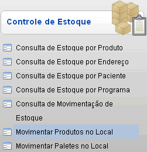
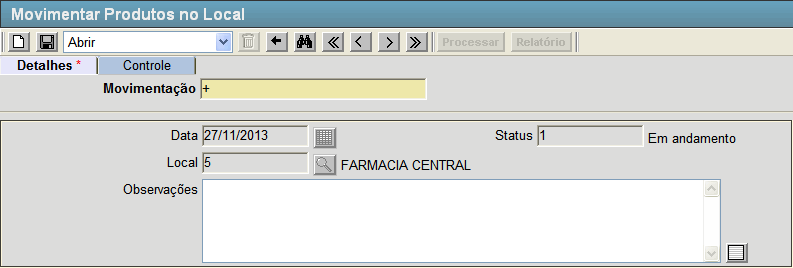
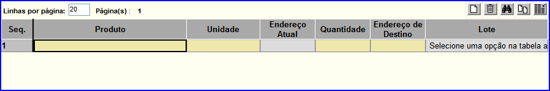
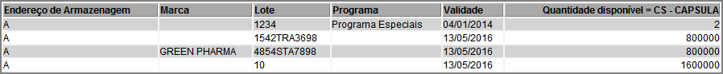

Movimentar Produtos no Local [ Voltar ]Esta tela permite o
usuário realizar movimentações dos produtos nos endereços de armazenagem de um local. Para acessá-la clique no link "Movimentar Produtos no Local" dentro do menu "Estoque - Controle de Estoque".  O sistema abrirá a seguinte tela:  Para realizar uma movimentação de produto, siga os passos a seguir: 1º Passo: preencha os campos da tela e clique no botão  [Salvar]. [Salvar].
2º Passo: preencha os dados do produto na grade da tela. Após salvar o registro aparecerá uma grade na tela conforme figura abaixo.  Os campos desta grade são:
Após informar o código do produto, selecione na tabela que aparecerá abaixo da grade dos produtos as informações dos itens do produto, conforme imagem abaixo.  Após inserir todos os produtos que serão movimentados e preencher os campos necessários clique no botão [Salvar] para armazenar as informações no registro.3º Passo: clique no botão  [Processar] para confirmar e finalizar a movimentação. [Processar] para confirmar e finalizar a movimentação. |
 [Pesquisar] para selecioná-lo por meio de uma listagem contendo todos os produtos cadastrados.
[Pesquisar] para selecioná-lo por meio de uma listagem contendo todos os produtos cadastrados.